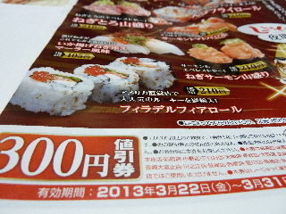
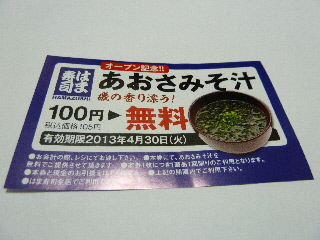

第一日曜日はアリオンでアニメとCDのレンタルが100円
2013/09/01
毎月第一日曜日は、レンタルビデオショップの「アリオン」でアニメとCDが100円なので、今日は行こう！って思いました。
DVDの100円はありますが、CDの100円はなかなかないのでいいですよね。
人気のある商品は早い者勝ちなので、ホームページで開店時間をチェックしました。
ついでにホームページの新着情報を見たんですが、
8/4（日）と7/7（日）の100円情報はあったんですが、今日9/1（日）のことは書いてありませんでした。
ん？やってないかも？。
他の新着情報を見たら、
8月中は旧作DVDレンタル100円（一部除く）
8/4はCD・DVDレンタル全品100円
コミックレンタル半額
8/11はCD・DVDレンタル全品100円
コミックレンタル半額
8/18はCD・DVDレンタル全品100円
コミックレンタル半額
8/25はメール会員限定で
CD・DVDレンタル全品100円
コミックレンタル半額
ってことでした。
8月はお得な日が沢山あったんですね。
アリオンのホームページをまめに確認するか、メール会員になってお得なメールをもらっておくと賢いかもって思いました。
次に新着でお得な情報をみつけたら、レンタルしに行こうと思います。
雲南市のサバーガーを食べてみたい。
2013/08/31
新聞見てたら、魚のサバをサンドイッチしたパンの記事が載っていました。
なんとも不思議な組み合わせです。
新聞記事はこちらでどうぞ
http://www.sanin-chuo.co.jp/shop/modules/news/article.php?storyid=541000042
サバのアジは、和風（カツオたれ味）とフライド照り焼きですって。
どんな味なんでしょうね？
食べて確認してみたい。
8/25の大東ふれあいまつりで販売していたそうですが、次はいつ販売するんでしょう？
サバーガーを作ってるのは「おっちラボ」ってところなので、ここのフェイスブックをたまに見ようと思います。
「おっちラボ」のページはこちら
https://www.facebook.com/occhilabo
サバーガーをネットで検索かけたらココが出ます。
八戸市のサバーガー
八戸前沖サバの店「サバの駅」鯖守ブログ
http://sabanoeki.sblo.jp/
こっちもサバの商品を色々開発中みたいです。
両方、美味しいって評判になるといいですね。
玉造のフリーペーパーがお勧めです。
2013/06/15
普通観光地のフリーペーパーっていうと、観光地の紹介メインなんですが、これはちょっと変わっていました。
観光地での写真の写し方が載ってました。
本とかで写真の撮り方ってよく載ってますけど、すぐ忘れちゃいますよね。？？
知ってる場所での撮影なので、分かり易かったです。
いい勉強が出来ました。
見かけたら読んでみてはどうでしょう。
回転ずし「しーじゃっく」のチラシをもらいました。
2013/03/19
近くに新しい回転寿司屋さん（はま寿司出雲大塚店）がオープンしたせいか分かりませんが、しーじゃっくさんも頑張ってるみたいです。
値引き券付きのチラシをもらいました。

新メニューが色々載っていました。
ちょっと変わってて、美味しそうなメニューでした。
しーじゃっくさんは値段が105円だけじゃなくて、210円とがあって美味しいんですよねー。
美味しいもの食べたいなー。
はま寿司出雲大塚店に行ってみた。
2013/03/18
新しくオープンした回転寿司屋さん、はま寿司に食べに行きました。
安いですね。
平日は1皿90円プラス消費税で94円でした。（土日は105円）
いいなーって思ったのは、最近よくあるタッチパネルで注文出来たことです。
もう皆さんタッチパネルの注文に慣れてるみたいで、注文の商品が沢山流れていました。
不人気商品がいつまでも流れてる感じがしなくていいですね。
注文の商品は出来立てで美味しいです。
鳥のから揚げの軍艦や、カキフライの軍艦、天ぷらの寿司は温かいし、歯ごたえも良くって美味しかったです。
あと、海老の天ぷらうどん・そばが210円なのは安くて良かったです。
回転寿司って、なんだかんだで沢山食べるので結構な金額になるんですが、これ食べたらだいぶお腹がふくれました。
うどんや蕎麦を目当てに行ってもいいかも？なんて思いました。
はま寿司のホームページはこちら
http://www.hamazushi.com/hamazushi/
ホームページでメニューを確認できます。
行く前に確認してみてはどうでしょう。
レジで精算したら、いいものをもらいました。

期間内にもう一度食べに行けたらいいなー。